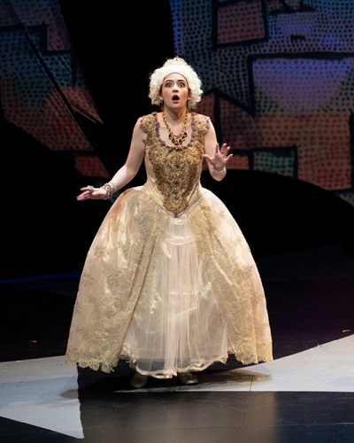
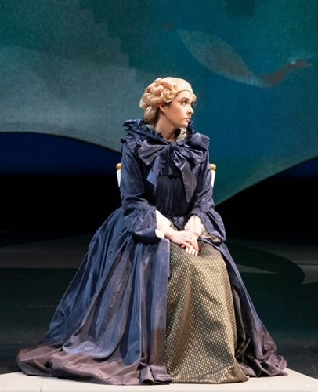
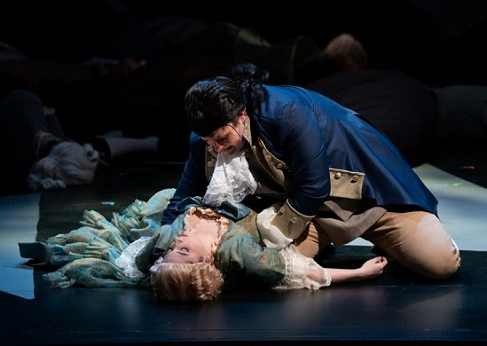
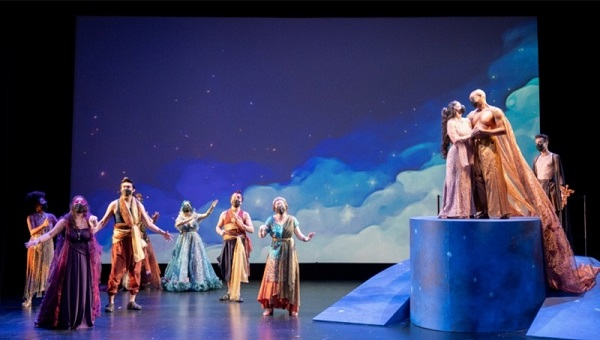
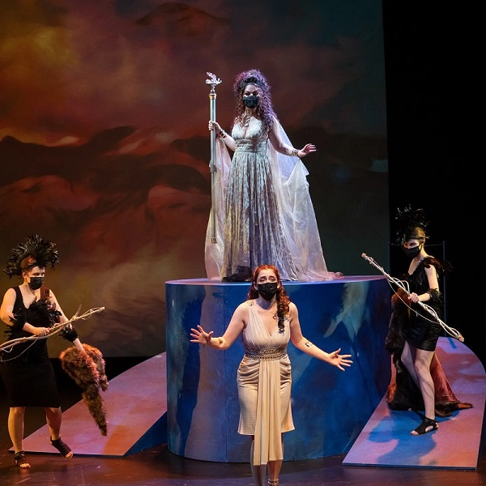

Competing at the American Institute of Musical Studies in Graz, Austria.
Productions

Sarah portrays a shocked Cunegonde in the opera Candide at DePaul
University in
Chicago.

Sarah portrays Cunegonde in Act Two of the opera Candide at DePaul
University
in Chicago.

Sarah portrays Cunegonde's death in the opera Candide at DePaul University
in
Chicago.

Sarah portrays Calisto's ascension in the opera La Calisto at DePaul
University
in Chicago.

Sarah portrays Calisto in the opera La Calisto at DePaul University in
Chicago.